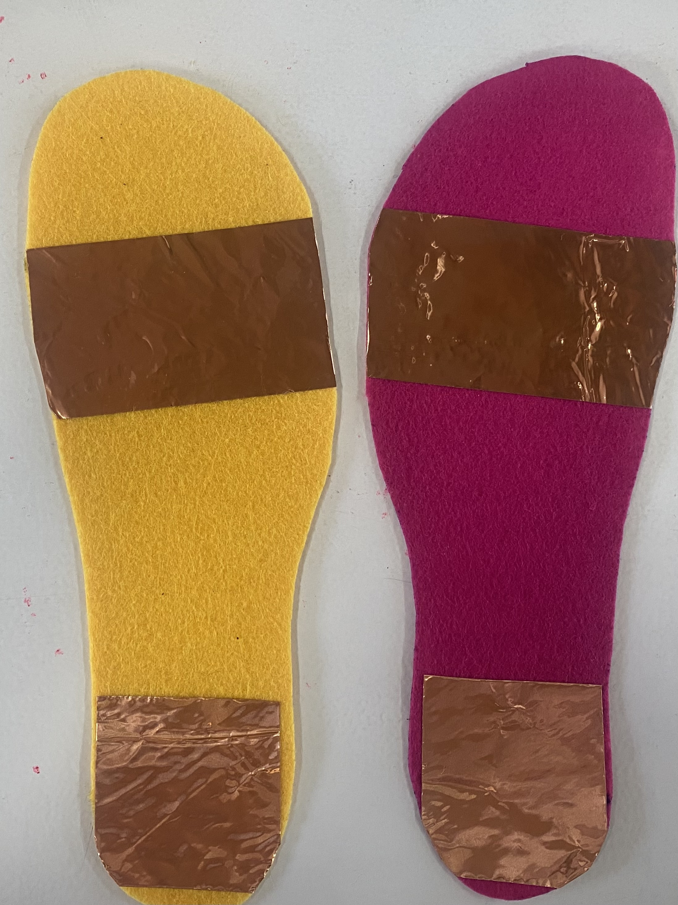
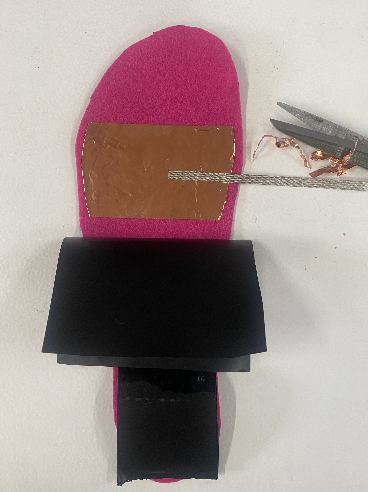
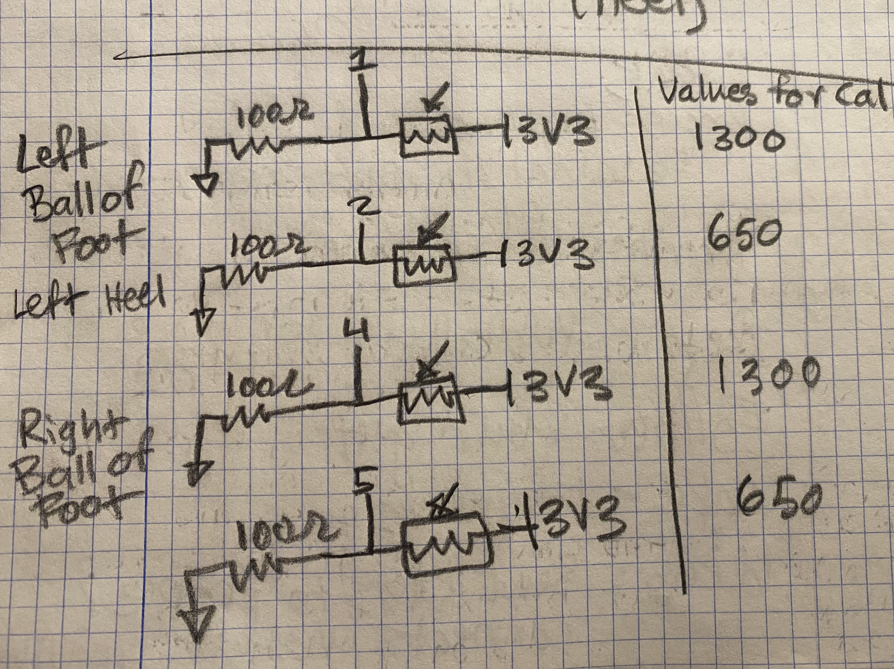
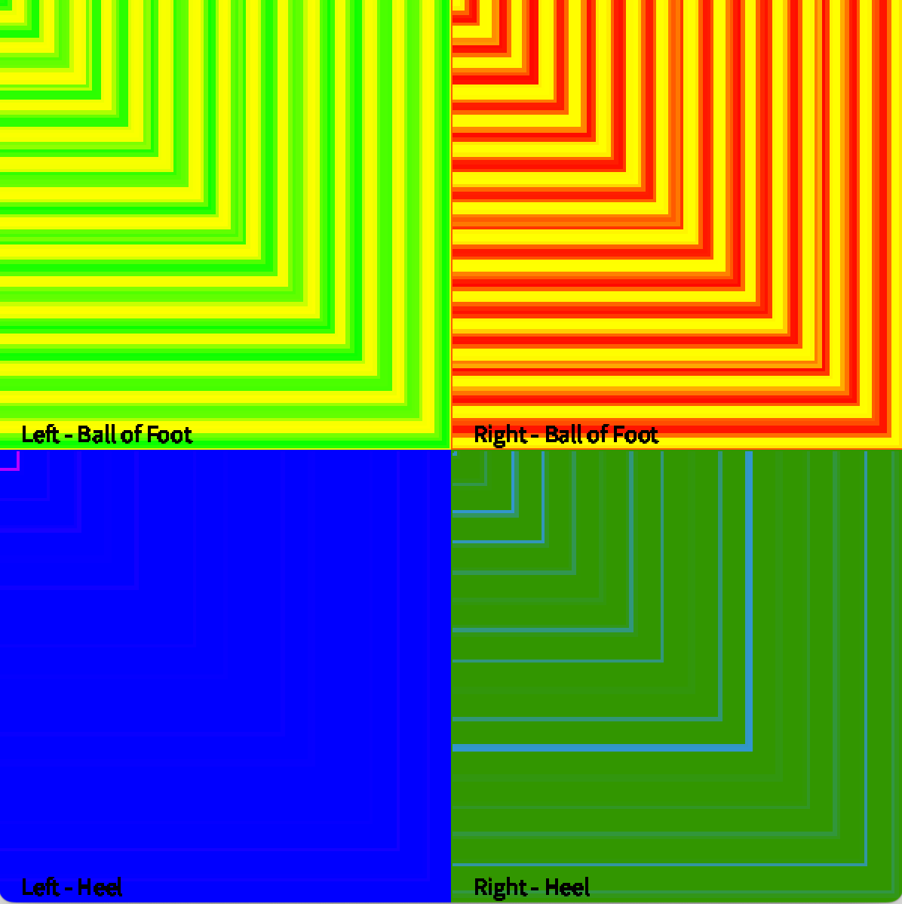
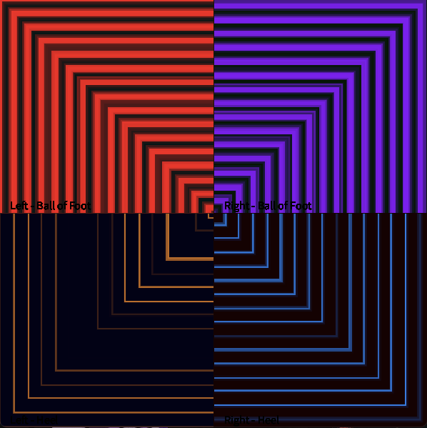
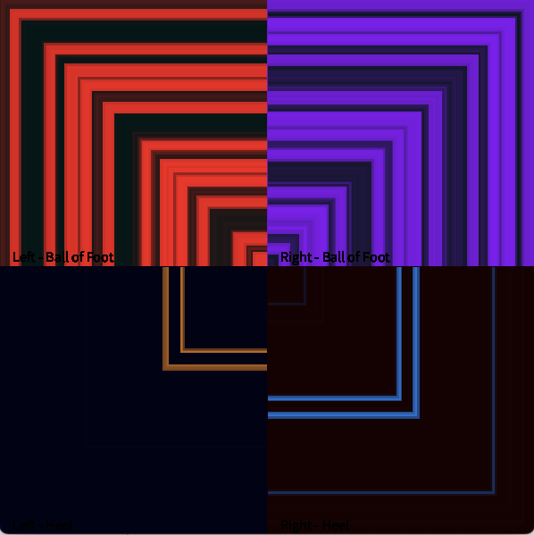
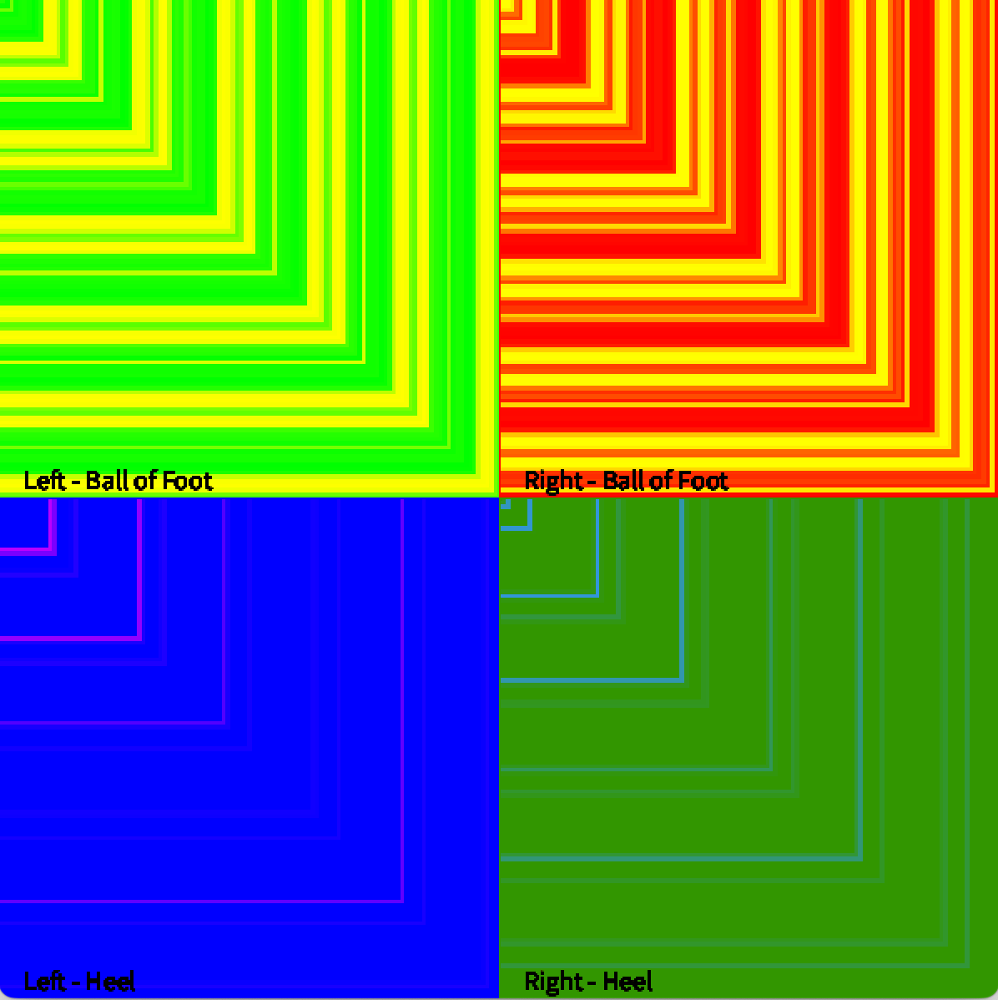
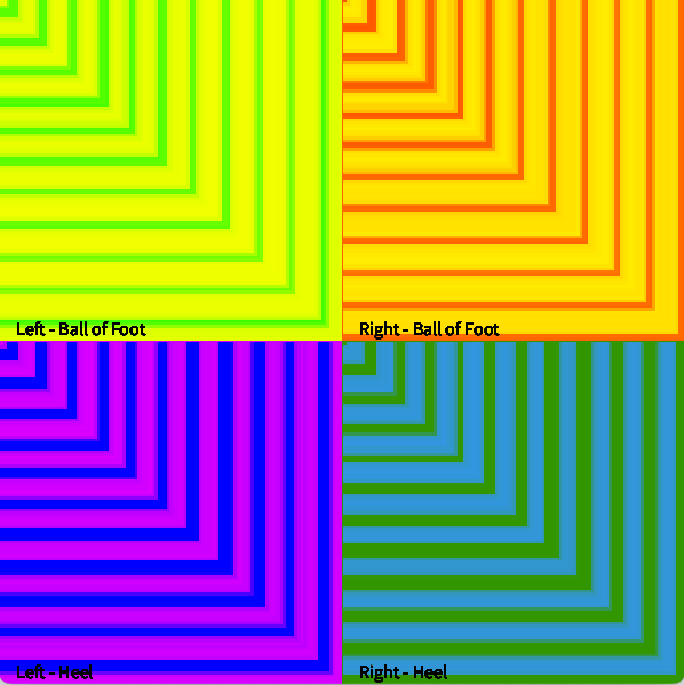

H(n)MI
Course Details
Name: Human (non-human) Machine Interactions
Dates: 11 February, 13-14 February, & 27-28 February 2025
Faculty: Citlali Hernández & Lina Bautista
Project
Our work throughout the course was documented in the following GitHub repository. Checkout our various codes there as well as examples from the first part of the seminar.
For this project, we wanted to visualize the pressure applied to parts of the foot while doing different types of folk dance steps. As a folk dancer, I was wondering what sorts of insights into various forms of dance we could gain from an artistic representation of the pressure applied to my feet during the steps. Since the assignment was to gather data from our bodies and visualize or analyze it in some way, this felt like a perfect opportunity to explore combining my interest in electronics and folk dance.
The sensors
The sensors for the shoes were very similar to the sensor we made in class on the first day with Citlali. This included using copper tape as the conductive layers on the top and bottom of the insoles, adding a piezo resistive layer and creating connectors with the nylon conductive tape. For this we used two layers of piezo resistive material in an attempt to reduce the point at which the sensor saturated. While it is unclear if this helped at all, what did help was modifying the circuit.


The circuit
By changing the resistor from 1kOhms to 100Ohms, the saturation point of the analog read pins was significantly reduced. Instead of relatively light pressure saturating the sensor, full body weight had to be placed on the sensor before it saturated at 4095.

The protoboard
To attempt to make the device wireless, the tenuous connections of the breadboard had to be made more secure. Therefore, once the circuit was complete, a perfboard was used to solder the resistors in place and make the connections more robust.
Attempts at wireless data transfer
The first attempt to make the data transfer wireless was to use the Google Sheets API to send the data to a remote spreadsheet.
The proposed code architecture was: - Read 4 pressure sensors (heel and ball of the foot in both feet) - Write the values to a Google Sheet using the API - Read the data from the Google Sheet into P5.js and visualize the data
While this worked, eventually, it was extremely slow. The data was only writing about every 0.5 seconds. This is likely due to the way that the array of data being sent was being created. Either way, it was far too slow to be useful for our purposes.
The next method was to try to use Open Sound Control to send the data wirelessly. We were able to get the Arduino sending a message and Processing receiving it, but it wasn't very clear how to send multiple data points and we eventually gave up on the idea in favor of using a long cable to connect to the Barduino to allow for movement during the dance.
Visualization - P5.js
We experimented with P5.js for visualization options. These included making a few circular visualizations and another one that acted more like a graph. ChatGPT was a helpful resource in coming up with the code for these visualizations.
Visualization - Processing
Unfortunately, we were only able to get P5.js to read in a single sensor value. Because we were using code provided by Lina and Citlali, we struggled to understand how to actually read and use the data. Eventually Citlali suggested we switch to Processing and use some example code she had. Eventually we were able to get the Arduino to print multiple values to the Serial port and to get Processing to read in all those values and display them (with the help of ChatGPT to understand Citlali's code).
We then started playing around with different colors, different visual representations, and different speeds. Because the window could only be a certain size, we had to reduce the speed at which the visualization expanded. We didn't want to send less data as this would reduce the resolution of the pressure we could measure. Instead we reduced the distance the visualization expanded every time.


Presentation
We were able to test a few different dance styles to see the different ways the visualization changed.
Check out the videos of the dance styles and the resulting patterns that were created to see the differences.


In most of these types of dance, the heels are not supposed to touch, therefore it appears in many of these patterns that the heel sensors were not working despite them functioning just fine as can be seen in the pattern made from walking normally.

Next steps
If we were going to continue this project, there are some things we would like to work on next.
- Make it actually wireless using OSC or MQTT
- Reduce the wires by putting the microcontroller closer to the feet, ideally not connected together
- Experiment more with the visualization to make different things clearer about the movement
- Perhaps use machine learning to analyze the data of the different dance forms to find patterns
- Perform more tests and create more visualizations
Reflection
This project was a very fun way to get involved with "small data" and making our own sensors. I really enjoyed the low-tech nature of this sensor. It was intuitive to understand how this type of sensor works and exciting to be directly involved in the process of making the sensor we then used to gather data about a topic I am personally very interested in.
Throughout the process, I found it somewhat frustrating to be dealing with different programs and to be bouncing back and forth from P5.js to Processing and back. However, once we got our system working, it was very satisfying, as it always is with coding projects, to see it come together.
I made some interesting observations about myself while I was dancing as well. Since the amount of time we had to register the data was very limited, a function of the size of the window we had for visualization, I struggled to time the dancing with the music and with the data recording. This challenge made the dancer part of my brain very uncomfortable as I tried to fit the dances into a context that did not work for them. Additionally, dancing in a room full of people who did not have the context for what I was doing made me a bit anxious which influenced how I was dancing. The final observation I made was that by visualizing my steps, I opened myself up in a way that felt extremely personal and a bit uncomfortable. When I shared the videos and visualizations with some dance friends, I found it interesting to observe my own response to sharing the videos. I felt self conscious about my dancing skills with the context of them being able to see somewhat quantitative data about how I was dancing. These observations, even more than the project itself were interesting for me to note.
I would like to continue this project if I have the time. While I do not necessarily know if it has an application outside of being kind of cool, I enjoyed the challenge of it and would like to make it more visually interesting. Another potential use for this kind of information would be analyzing patterns within the pressure in a more quantitative way. The suggestion was made during our presentation that we could apply machine learning algorithms to the data to help identify patterns. I am hesitant to do this because the sensors are not the most consistent and I would worry that by applying more 'scientific' analysis to the pressure certain conclusions would be drawn based on unreliable data. However, I think this is a potentially interesting line of investigation to follow, given certain precautions about making quantitative assumptions from somewhat subjective data.